Wielkopolska Wschodnia w oczach biznesu
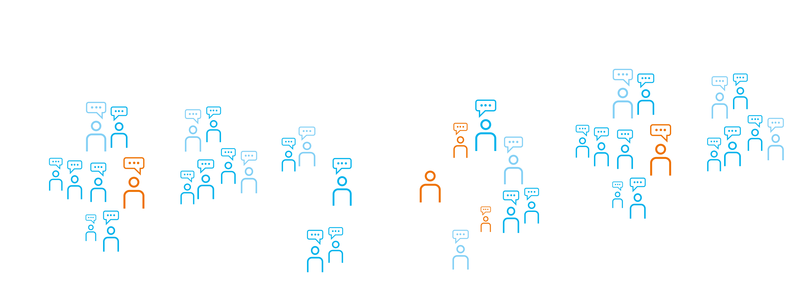
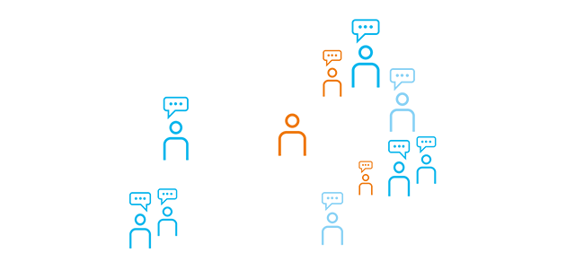
5. Edycja Konin Business Meeting
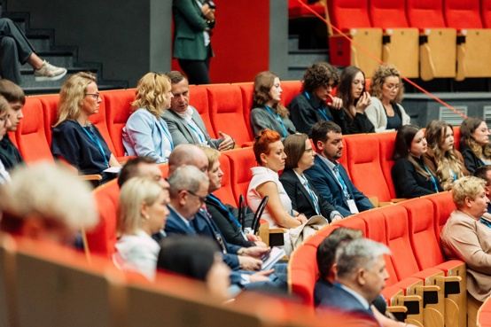
Już po raz piąty Izba Gospodarcza Wielkopolski Wschodniej oraz Akademia Nauk Stosowanych w Koninie, organizują konferencję "Konin Business Meeting". Turecka Izba Gospodarcza jest też po raz drugi partnerem w organizacji tego wydarzenia. "Konin Business Meeting" to wydarzenie adresowane przede wszystkim do przedsiębiorców z Wielkopolski Wschodniej, zaś jego celem jest stworzenie przestrzeni do inspiracji, dyskusji oraz integracji środowiska przedsiębiorców.
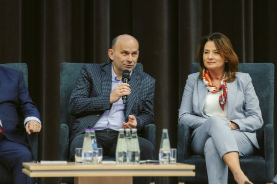
Rosnące wymogi środowiskowe nakładają na nas nowe obowiązki. Musimy bronić się przed czyhającymi na nas cyberprzestępcami, a jednocześnie upływ czasu powoduje, że musimy myśleć o tym, jak bezpiecznie przekazać nasze firmy następnym pokoleniom. To wszystko dzieje się w cieniu transformacji naszego regionu. Zastanawiamy się, czy Wielkopolska Wschodnia to miejsce, które stwarza szanse na przyszłość, czy może przyszłą pomyślność należy związać z innym miejscem na Ziemi?
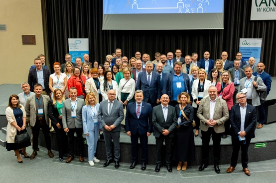
Konin Business Meeting to doskonała okazja, by posłuchać interesujących mówców, uczestniczyć w dyskusjach tematycznych oraz nawiązywać biznesowe relacje w sprzyjającej atmosferze. Nieustannie staramy się modyfikować formułę naszego wydarzenia. Tym razem, oprócz sesji plenarnych, długich przerw sprzyjającymi networkingowi i sesji warsztatowych, chcemy dodać sesje "business mixer-a", które pomogą w nawiązaniu nowych relacji.
konferencji
1
Sukcesja
2
ESG
3
Cyberbezpieczeństwo
4
Rozwój regionu
konferencji 24.04.2025
Data:
24.04.2025r.
Miejsce:
Akademia Nauk Stosowanych w Koninie Centrum Wykładowo-Dydaktycze, ulica ks. J. Popiełuszki 4
9:00
Rejestracja (poranna kawa i ciacho)
9:30
Otwarcie konferencji (Mateusz Kowalewski IGWW i Damian Brzóska TIG)
9:45
Wystąpienie Prezydenta Konina, Piotra Korytkowskiego
10:00
Wystąpienie Rektora ANS, Artura Zimnego
10:15
Przerwa kawowa + business mixer
11:00
Panel I: bieżące wyzwania przedsiębiorców
Zagadnienia:
1. ESG - (nie)zrównoważony rozwój?
2. Sukcesja – jak zadbać o trwanie biznesu i majątku?
3. Bezpieczeństwo w życiu i biznesie.
Uczestnicy: Jakub Głowacz (Asona Energy), Monika Kozłowska (Turecka Izba Gospodarcza), Przedstawiciel Millennium Bank, Przedstawiciel PwC
Moderacja: TBA
12:00
Lunch / Business mixer / równoległe sesje warsztatowe
Sesja I
Sukcesja
TBA
Prowadzący: PwC
Sesja II
ESG a prawo pracy i HR
Jak idea zrównoważonego biznesu i odpowiedzialnego zarządzania wpłynie na środowisko pracy?
Prowadzący: Łukasz Górzny (DZP)
Sesja III
Cyberbezpieczeństwo
TBA
Prowadzący: TBA
13:00
Panel II: Jaka przyszłość czeka biznes w Wielkopolsce Wschodniej?
Zagadnienia:
1. Jakie szanse daje przedsiębiorcom Wielkopolska Wschodnia?
2. Czym jest innowacja i czy jesteśmy innowacyjni?
3. Czy Wielkopolska Wschodnia to dobre miejsce do życia?
4. Jaka jest wizja rozwoju naszego regionu?
Uczestnicy: Andrzej Bielewski (Bielewski Architekci), Damian Brzóska (Turecka Izba Gospodarcza), Piotr Korytkowski (Prezydent M. Konina), Tomasz Maciejewski (BIZVENTURA Sp. z o.o.), Piotr Muszalski (Asona Energy)
Moderacja: Mateusz Kowalewski
14:30
Przerwa kawowa
14:45
„Oddychaj i Wygrywaj: oddech jako klucz do spokoju i skutecznej komunikacji”
Naszym gościem specjalnym będzie Pan Maciej Szyszka, który opowie o tym jak oddech, spokój, koncentracja oraz zimno przekładają się na zdrowie oraz jakość życia i relacji z otoczeniem.
15:30
Loteria wizytówkowa
16:30
Zakończenie
Chcesz poznać koszt udziału w wydarzeniu? Kliknij poniższy przycisk!
Dla członków IGWW przygotowana została zniżka członkowska.
Organizatorzy
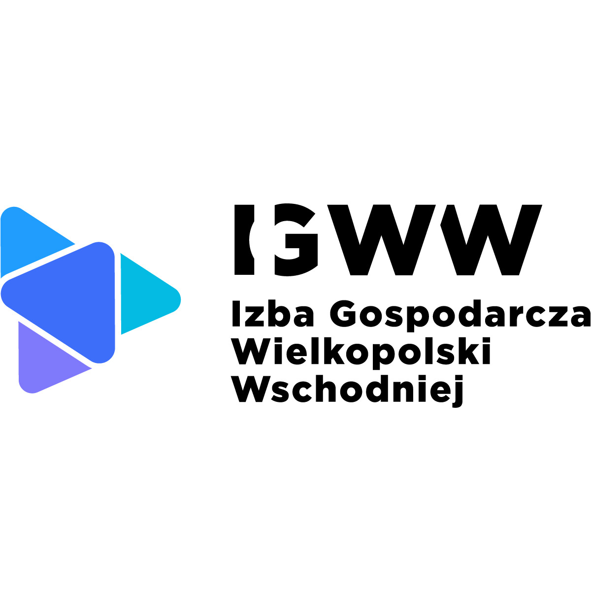
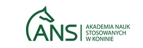
Partner główny
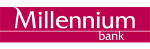
Partnerzy
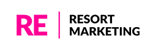
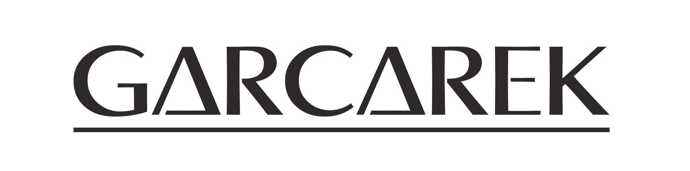
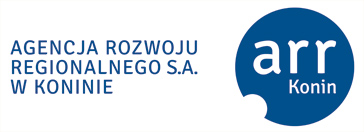
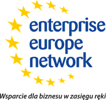
Patronat medialny
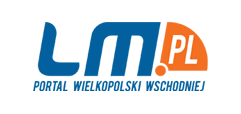